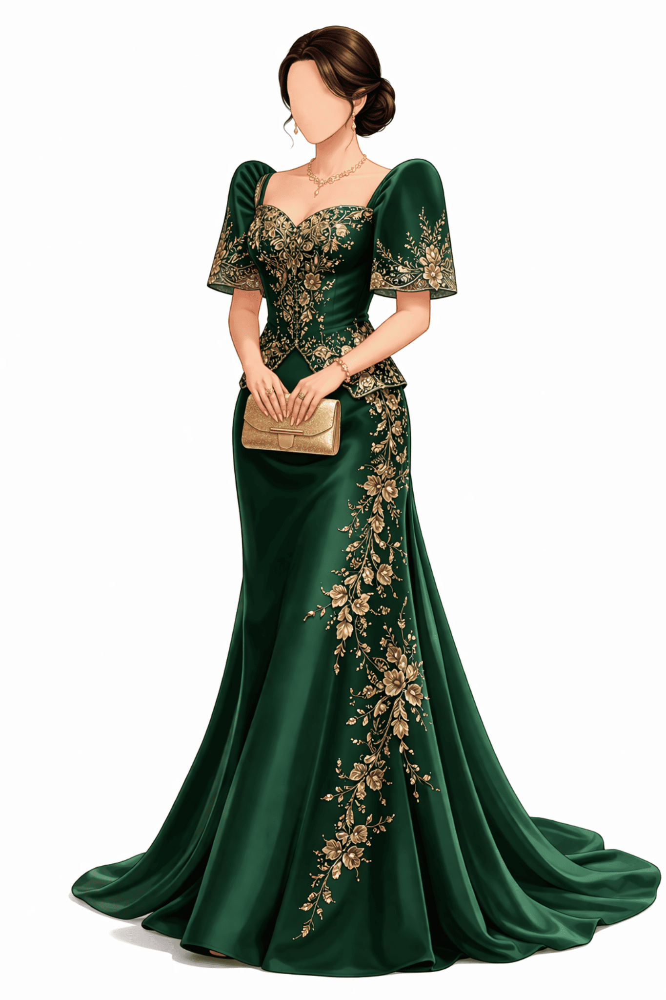
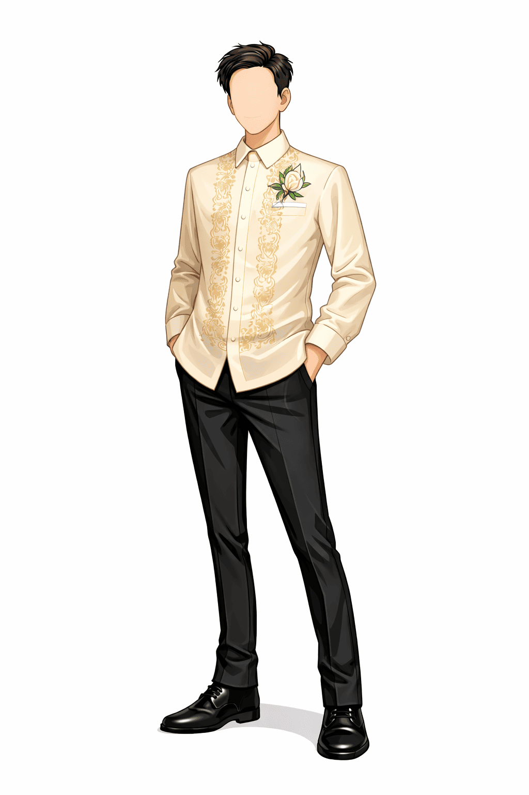
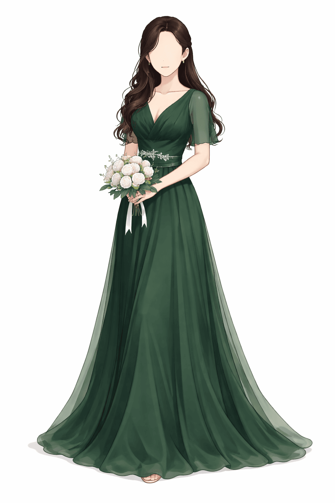
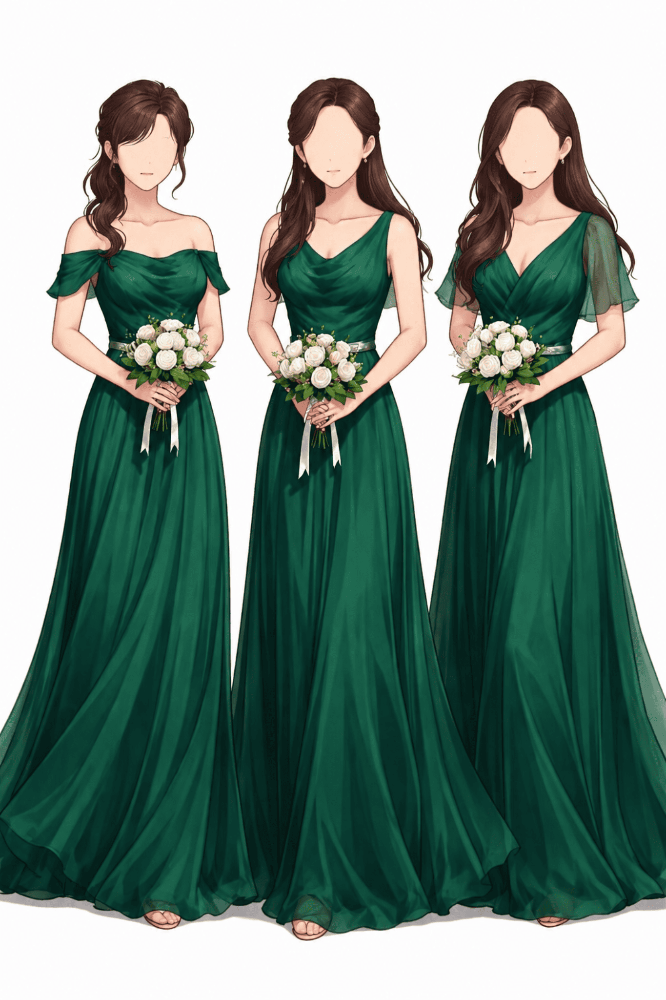
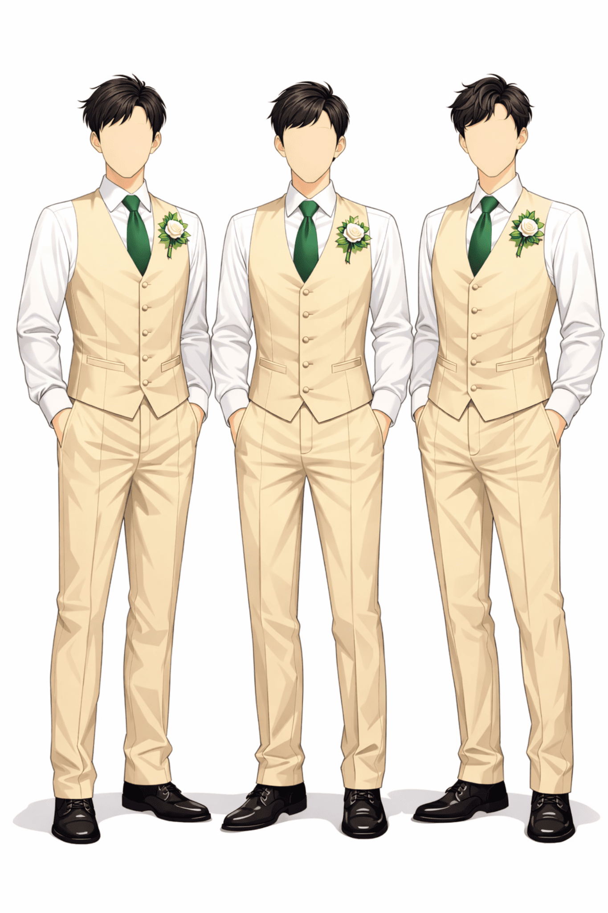
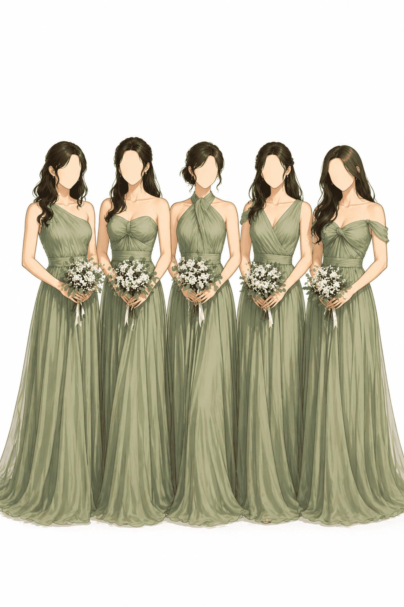
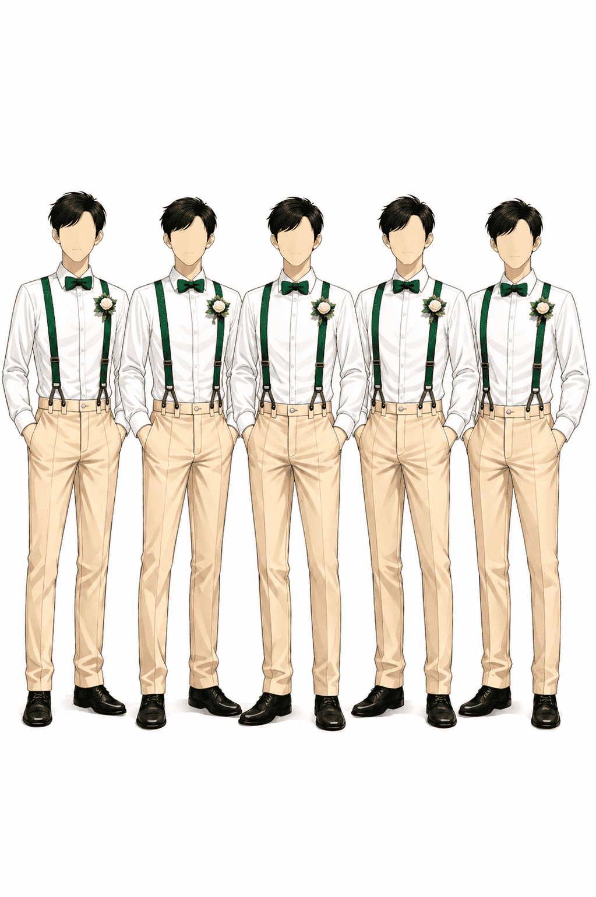
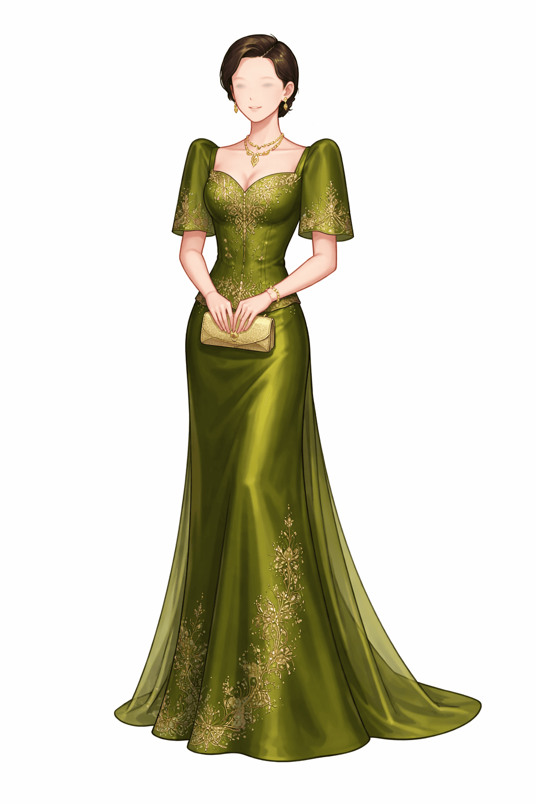
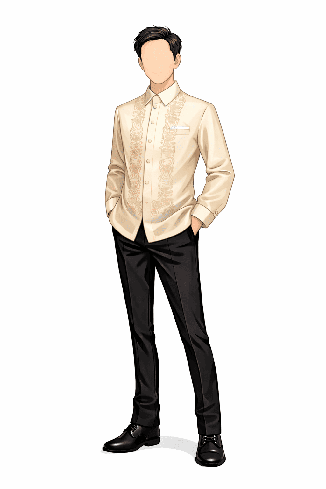
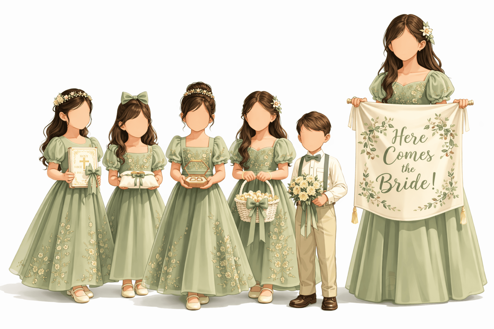

Inspiration guide for our wedding entourage and guests
Mothers wear elegant emerald green gowns with gold accents, while fathers wear a champagne or beige Barong Tagalog paired with dark trousers and formal shoes.


The Maid of Honor wears an elegant forest green gown, while the Best Man wears a formal suit in forest green and formal black shoes.

Secondary sponsors wear formal attire in emerald green for ladies and gentlemen with black formal shoes.


Bridesmaids wear elegant sage green gowns, while groomsmen wear beige trousers with white shirts, green accents, and black formal shoes.


Godparents wear in champagne or olive green paired with elegant heels, and Ninongs in Barong Tagalog with dark trousers and formal black shoes.


Little members of the entourage wear coordinated formal attire in sage green tones.

Wear semi-formal or formal attire in champagne, beige, or sage green. Please avoid white.